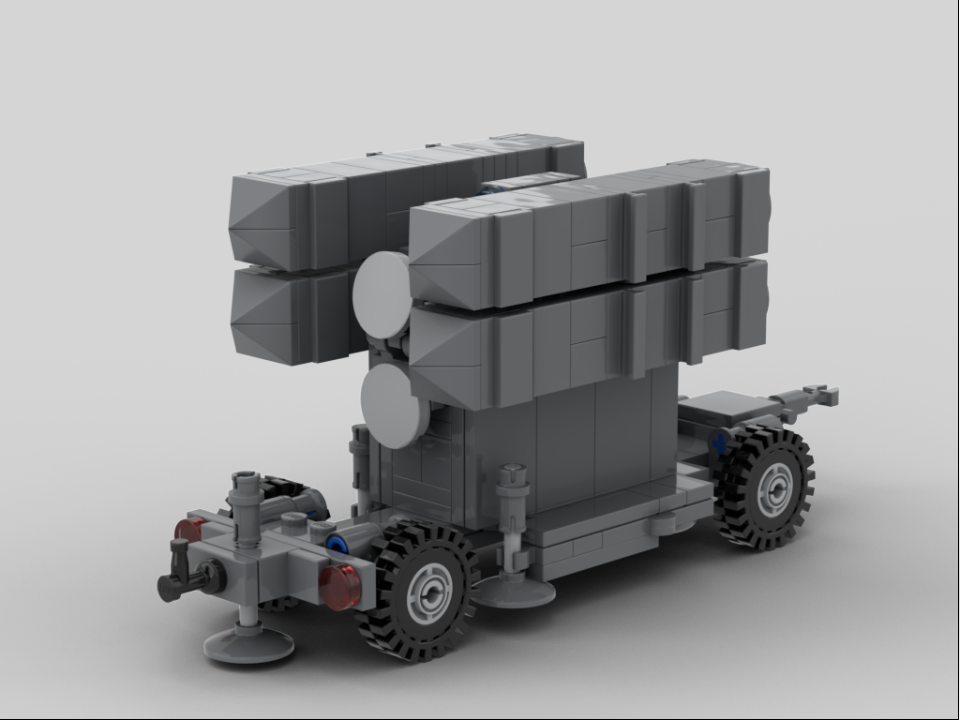
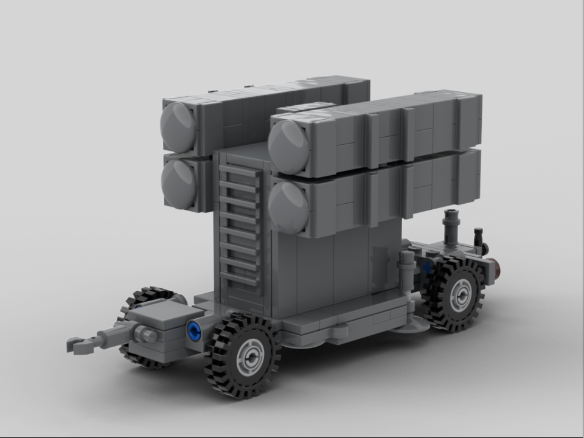
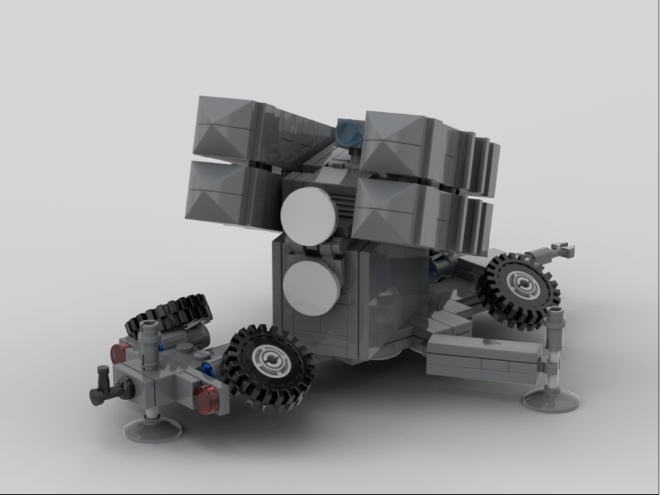
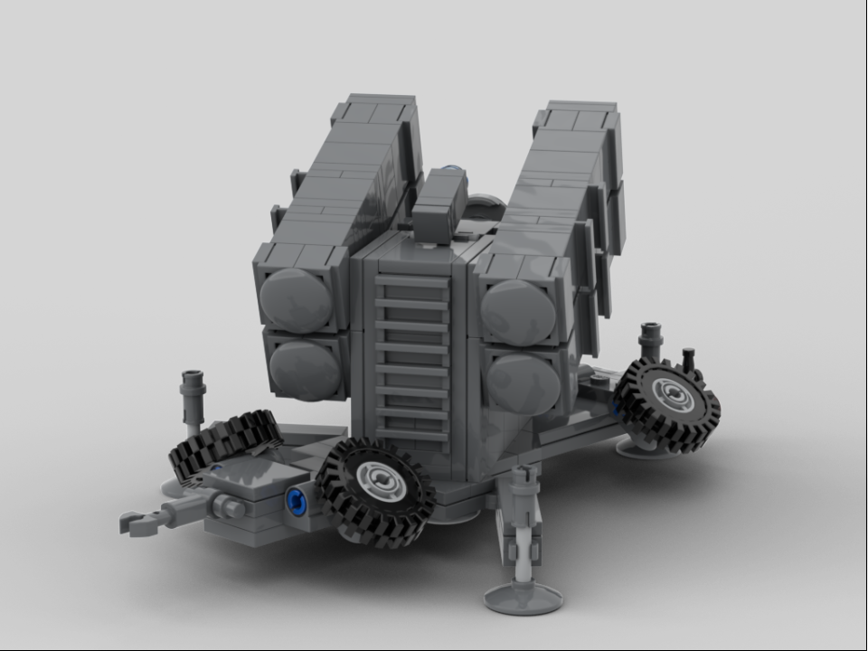

The Skyguard Sparrow launcher is the surface-to-air missile launcher unit of the Skyguard system. Built upon the same chassis used for the Skyguard 35mm autocannon, the launcher can fire four RIM-7 Sea Sparrow or Aspide missiles.
This model features two posable modules with two missiles each, a posable camera, two outriggers that fold out on the side and one in the front, and four rolling wheels (wow!) that fold up during deployment position.

Deployed:
